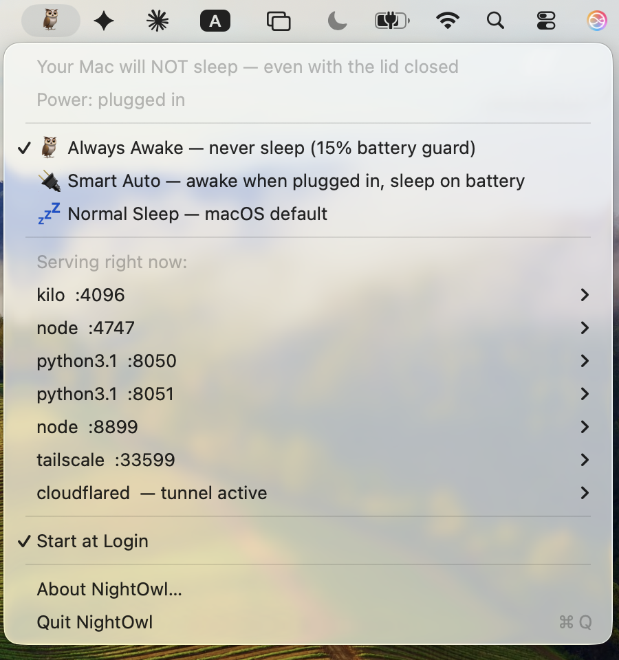

Free · open source · macOS 13+
Close the lid.
Nothing dies.
NightOwl keeps your MacBook awake with the lid closed — no
external display, no dock — the thing caffeinate
and Amphetamine can't do. Turn the MacBook you already own into an
always-on machine for bots, agents, and home servers.
$ brew install --cask taufiqxr/tap/nightowl
No Homebrew? Grab the .pkg installer — or build from source.
- 23:41:07 mode=always disablesleep 1
- 23:41:52 lid closed — machine still awake
- 00:13:20 watch: port 3000 up (node)
- 01:47:33 watch: cloudflared up
- 03:22:10 on battery 34% — guard armed
- 05:58:41 back on AC — disablesleep 1
- 07:30:02 uptime intact. servers never blinked
- 07:30:02
The clamshell problem
Keep a MacBook awake with the lid closed — the part other tools can't do
If you run anything on a MacBook that needs to stay alive — a home server, a bot, a long download, a build — closing the lid kills it. Here's the chain, and where every other tool breaks:
- macOS force-sleeps on lid closeclamshell sleep
- Unless the Mac is docked to both AC power and an external display, shutting the lid always sleeps the machine. That's built into macOS, not a setting.
- Keep-awake apps can't stop itcaffeinate · Amphetamine
- Their power assertions only prevent idle sleep. Forced clamshell sleep ignores assertions entirely — the popular tools are simply not in this fight.
- One switch survives the lidpmset disablesleep
- macOS's own root-level power switch — powerful, and easy to misuse (a Mac that never sleeps will happily cook in a backpack). NightOwl wraps it in three explicit modes, an always-visible status icon, and a low-battery guard.
Three modes, one honest icon
Set it by intent, not by incantation
The menu bar icon reflects the actual system state, checked every 10 seconds — not just what NightOwl last did. If anything else touches the sleep setting, you'll see it.
Always Awake
Never sleeps — plugged in or on battery. For the Mac that's become a stationary appliance.
Low-battery guard: below 15% on battery, normal sleep is restored so a forgotten Mac can't run itself flat. Re-arms at 18% or on the charger.
Smart Auto
Awake whenever plugged in, normal sleep on battery. Set-and-forget, and bag-safe by construction: unplugged means it sleeps.
Normal Sleep
The macOS default, one click away. NightOwl never makes stock behavior hard to get back.
Not just awake — aware
It knows what it's staying awake for

- Live server list. Every local service with an
open port, grouped by process — open
localhost:PORTor copy the URL from the menu. Tunnels (cloudflared,ngrok) detected too. - Watch anything. A watched service that goes down triggers a macOS notification — and another when it's back. An always-awake Mac can't silently become a uselessly awake Mac.
- Claude Code session switcher. Every open session listed by name, busy sessions marked ⚡, one click to jump to that terminal.
- Nothing leaves the machine. Detection is one
lsofcall when you open the menu. No network access, no analytics.
Transparency
What runs as root — the complete list
A tool that asks for your admin password owes you the full story. NightOwl's is short:
- Always Awake and Smart Auto install one root LaunchDaemon — about
40 lines of shell you
can read — that checks power state every 20 seconds and flips
pmset disablesleepaccordingly. - The low-battery guard runs as root precisely so it works unattended — no password prompt when the Mac is forgotten in a bag.
- Normal Sleep removes the daemon and restores
disablesleep 0. Every state change is one line in/var/log/nightowl.log.
Nothing else. No network access, no analytics, no background helpers beyond that one daemon — and the daemon's logic is covered by mock-based tests run in CI on every push. Full write-up →
FAQ
Fair questions
My screen still turns off and locks when I close the lid — is it even working?
Yes — that's the design. The display sleeps and locks; the
machine keeps running. Check the menu bar icon (🦉 = awake)
or run pmset -g | grep SleepDisabled — 1
means every server, download, and script is still going with the lid
shut.
Will Always Awake drain my battery?
It will use it — unplugged, the Mac stays fully on. But it won't run itself flat: the guard restores normal sleep below 15% battery and re-arms once you're charging or above 18%. If your Mac travels a lot, Smart Auto is the better fit: normal sleep the moment you unplug.
Why does it need my admin password?
pmset disablesleep is a root-level power switch —
macOS itself requires admin rights for it. NightOwl asks through the
standard macOS dialog, and the section above lists every command it
runs with those rights.
Why the Gatekeeper warning on first launch?
NightOwl is ad-hoc signed, not notarized — notarization requires a
paid Apple developer account, and this is a free MIT project.
Right-click → Open once, or brew install --cask
--no-quarantine taufiqxr/tap/nightowl. The full source is on
GitHub if you'd rather build it yourself.